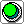
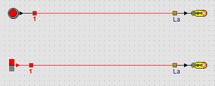

Drukknop Schakelaar
SchakelaarLeerpad › Les 2 van 13

| Onderdeel | Gedrag | Voorbeeld uit het dagelijks leven |
|---|---|---|
 Drukknop | Aan zolang je hem ingedrukt houdt. | deurbel, toetsenbord |
| Schakelaar | Blijft aan of uit tot je opnieuw klikt. | lichtschakelaar |
Welk onderdeel kies je voor een deurbel, en welk voor het licht in een kamer? Waarom?
Een deurbel mag alleen rinkelen zolang je drukt: een drukknop. Het licht moet blijven branden als je de kamer in loopt: een schakelaar.